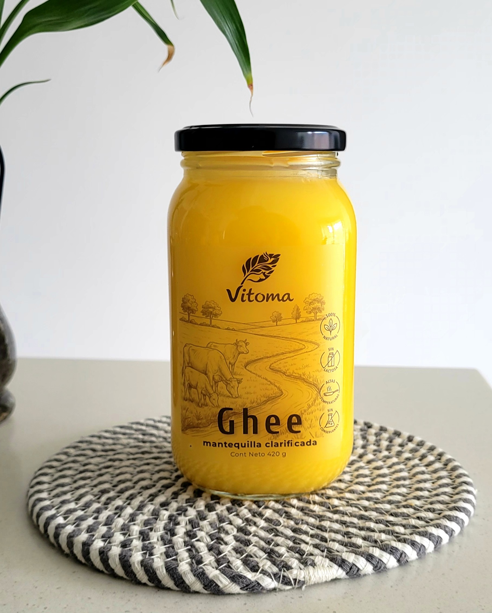

Pureza absoluta
Nuestro proceso es artesanal, meticuloso y respetuoso. Sin químicos. Sin conservantes. Sin procesos industriales agresivos.
Nada está aislado. Todo se conecta con todo.
Dentro de ti habita un universo de vida que también necesita ser nutrido.
"Comprender la vida comienza por reconocer la vida que habita en nosotros."
Tu cuerpo no es una pieza aislada. Es una totalidad. Es un ecosistema vivo donde nada está aislado y todo se conecta con todo.
Células, órganos y los billones de microorganismos forman una red de interacciones de la que emerge la vida
De esta comprensión nace Vitoma: la unión entre la fuerza vital (Vit) y la totalidad (Oma).
Somos la respuesta a la necesidad de comprender cómo funciona nuestro universo interno para identificar sus necesidades esenciales y devolverle su equilibrio natural.
No somos solo una marca. Somos un puente entre la sabiduría biológica y tu salud cotidiana.
"Nutrir no consiste en llenar el cuerpo. Consiste en comprender qué necesita el ecosistema que habita en ti"
Algunos alimentos conservan una estructura que merece ser respetada. Nuestro Ghee nace de esa convicción: lo elaboramos lentamente para preservar la naturaleza del alimento y ofrecer una grasa tradicional, estable y versátil.
Disponible en presentación de 200 grs y 420 grs
Mantequilla clarificada mediante un proceso artesanal de cocción lenta que elimina el agua y los sólidos lácteos, resultando en una grasa pura, noble y de altísima estabilidad.
Ideal para saltear, hornear, untar en preparaciones tibias o integrar en bebidas calientes para potenciar la absorción de nutrientes liposolubles.

"La verdadera nutrición no transforma el alimento; honra la sabiduría que ya habita en él."
Nuestro proceso es artesanal, meticuloso y respetuoso. Sin químicos. Sin conservantes. Sin procesos industriales agresivos.
La calidad comienza en la tierra. Seleccionamos materias primas biológicamente limpias y de producción responsable.
Todo lo que lleva nuestro nombre debe contribuir al equilibrio del cuerpo. Nunca a su deterioro.
"Comprender el cuerpo también es una forma de cuidarlo."
Si quieres conocer nuestro Ghee o llevarlo a tu tienda,
será un gusto conversar contigo.